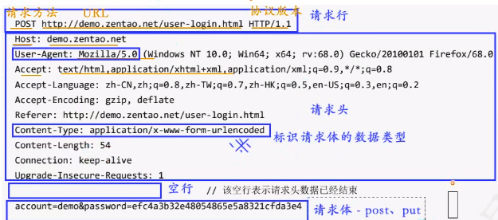

系统与系统之间，组件与组件之间，数据传递交互的通道
包括：
HTTP、HTTPS；RESTful
HTTP请求

RESTful方法：
GET POST PUT DELETE
结构：
对系统中多个接口进行的测试，旨在确保这些接口之间的交互和协作正常，以及整个系统的功能和性能符合预期。
| 用例编号 | 用例标题 | 模块 | 优先级 | 前置条件 | 请求方法 | URL | 请求头 | 请求体(请求数据) | 预期结果 | 实际结果 |
|---|---|---|---|---|---|---|---|---|---|---|
单接口测试用例
要点：参数k：反向（多参、少参、无参、错参）；数值v（类似功能测试）
业务场景测试用例
最少的用例覆盖最多的接口
敏感数据加密
SQL注入
设置： pm.globals.set("var_name", value)
获取： {{var_value}} 或 var value = pm.globals.get("var_name")
设置： pm.enviroment.set("var_name", value)
获取： {{var_value}} 或 var value = pm.enviroment.get("var_name")
请求前置脚本：在Postman内部实际HTTP请求之前
时间戳：对应绝对时间，从1970年1月1日00:00:00到现在所经历的秒数。
断言响应状态码、断言JSON数据、断言响应体是否包含某个字符串、断言响应体是否等于某个字符串（对象）、断言响应头
多个HTTP请求之间存在数据关联或依赖关系
使用变量
读取外部数据文件
参数里： {{ 字段名(csv) / key(json) }}
代码里： data.字段名
Newman
newman run 测试脚本文件.json -e 环境变量文件 -d 测试数据文件.csv/json -r html --reporter-html-export 报告名称.html